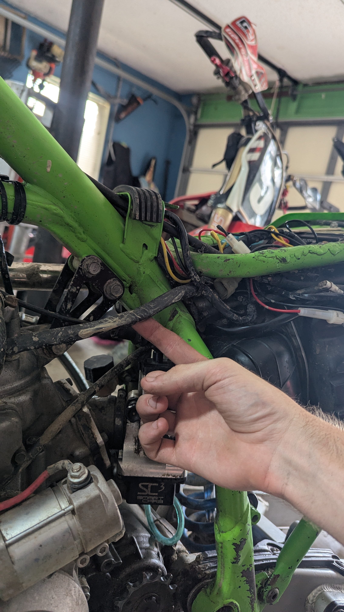

Fixing Wiring Mess / September 2026
I ended up redoing a good amount of the wiring as I was in a rush to do it all originally so it was not the prettiest. It still isn't the best, but it will do and is much better than before. I also had to find a new wheel as my old bearings, even though they had been replaced previously, ended up making the hub 'explode' so there is a 'new' wheel on there while I source a new hub for the old one.
